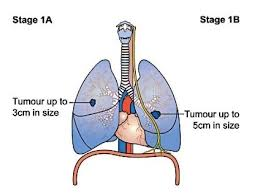
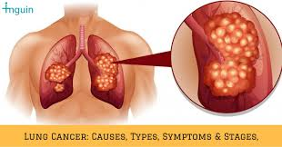
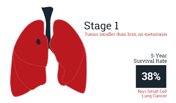
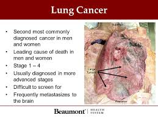
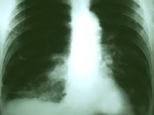

Stage 1
The lung cancer
Malignancy stages tell how far the disease has spread and help manage treatment. The possibility of fruitful or corrective treatment is a lot higher when lung malignant growth is analyzed and treated in the beginning periods, before it spreads. Since lung disease doesn't cause evident side effects in the prior stages, determination regularly comes after it has spread.
Little cell lung malignant growth (SCLC) has two primary stages. In the constrained stage, disease is found in just a single lung or close-by lymph hubs on a similar side of the chest. The broad stage implies disease has spread: all through one lung to the contrary lung to lymph hubs on the contrary side to liquid around the lung to bone marrow to far off organs
Tumors as loud as possible can influence facial nerves, prompting hanging of one eyelid, little student, or absence of sweat on one side of the face. Together, these manifestations are called Horner disorder. It can likewise cause bear torment. Tumors can push on the extensive vein that vehicles blood between the head, arms, and heart. This can cause swelling of the face, neck, upper chest, and arms.
From the minute you breathe in smoke into your lungs, it begins harming your lung tissue. The lungs can fix the harm, yet proceeded with introduction to smoke makes it progressively troublesome for the lungs to keep up the fix. When cells are harmed, they start to carry on strangely, improving the probability of creating lung malignant growth. Little cell lung malignant growth is quite often connected with overwhelming smoking. When you quit smoking, you bring down your danger of lung malignant growth after some time. Introduction to radon, a normally existing radioactive gas, is the second driving reason, as per the American Lung Affiliation. Radon enters structures through little splits in the establishment. Smokers who are likewise presented to radon have a high danger of lung malignant growth. Taking in different risky substances, particularly over an extensive stretch of time, can likewise cause lung malignant growth. A sort of lung malignant growth called mesothelioma is quite often brought about by introduction to asbestos.